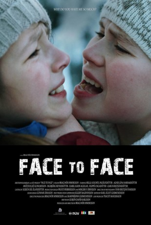

#10151 Mathildas Weg
Alternativ: Face to Face
 
 IMDB-Wertung: 7.0 / 10
IMDB-Wertung: 7.0 / 10  Metascore: 0
Metascore: 0 
Die 12-jährige Brynhildur ist aufgeregt, denn sie hat gute Chancen, die Solostimme bei der weihnachtlichen Choraufführung ihrer Klasse zu übernehmen. Wenn da nur nicht die fiese Silja wäre. Mit ihren Mobbingattacken macht sie Brynhildur permanent das Leben schwer. Obwohl sie ihr doch gar nichts getan hat! Erst als sie sich endlich traut, mit ihrem Vater darüber zu sprechen, beginnt Brynhildur zu verstehen, was hinter dem Verhalten Siljas stecken könnte. Auf Anraten ihres Vaters lädt Brynhildur die ganze Klasse zu ihrer Geburtstagsfeier ein. Vielleicht kann sie auf diesem Weg auch Siljas Sympathie gewinnen und mit ihr Freundschaft schließen. Doch der Plan scheint nicht aufzugehen – denn Silja organisiert eine Gegenparty!
Jahr: 2015
Dauer: 53 Minuten
FSK:
Land: Island Studio: Hreyfimyndasmidjan/MPFactoryTonspuren:
Untertitel:
Auflösung: 720p (1280x640) Größe: 1536 MB
Genre: Familie, Weihnachten
Regisseur: Bragi Thor Hinriksson
Drehbuch: Guðjón Davíð Karlsson
Soundtrack:
Darsteller:
- Ilmur Kristjánsdóttir als Teacher
- Ingibjörg Reynisdóttir als Mom
- Isabel Karin Aguilar als Selma
- Gunnar Stefán Bjarnason als Alli
- Þröstur Leó Gunnarsson als Dad
- Þorsteinn Bragi Gíslason als Addi
- Agnes Lína Harðardóttir als Silja
- Filippía Ingadóttir als Bergrún
- Helga Xochitl Ingólfsdóttir als Brynhildur
- Vigdís Hrefna Pálsdóttir als Music Teacher
- Grettir Valsson als Grettir
Datei: X:\2015(G-M)\Mathildas Weg (2015, FSK, 1280x640).mkv seit 13.12.2018
Festplatte: HD 2015(A-Z)
 Es gibt insgesamt 129 Filme in der Gruppe '2015(G-M)'
Es gibt insgesamt 129 Filme in der Gruppe '2015(G-M)'